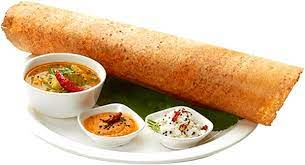

Dosa

Discription
A dosa is South Indian, fermented crepe made from rice batter and black lentils. Masala Dosa,
specifically,is when you stuff it with a lightly cooked filling of potatoes,
fried onions and spices.
Ingredients
1-1/2 cups long grain rice
1/2 cup urad dal (polished black lentil or white lentil)
3 quarts water
Salt
1 medium onion, chopped
1 – 2 green chilies, chopped
1 Tbs. ghee (clarified butter) or regular butter
1/2 tsp. black mustard seeds
1/2 tsp. chana dal (split black chickpeas)
1 sprig curry leaves
1/2 tsp. turmeric powder
2 large potatoes, boiled
8 oz. coconut, cilantro and tomato chutney (optional)
16 oz. sambar (vegetable lentil stew, optional)
Steps
Prepare Dosa Batter:Soak rice and urad dal in separate bowls for 4-6 hours. Strain.
Process rice and urad dal mixture in commercial grinder or food processor.
While grinding, add water a cup at a time until it reaches the consistency
of pancake batter.Salt to taste.
Cover mixture and let sit overnight. Do not refrigerate; it needs to ferment.
Prepare Masala Dosa Filling: Add oil or ghee to a skillet.
Add mustard seeds and chana dal.
Shake mixture over the flame until golden brown.
Add curry leaves (whole leaf), green chiles, and onions.
Sprinkle turmeric powder and salt (for taste). Stir.
Break up boiled potato into small chunks and add them to your mixture. Add water and stir.
Prepare Masala Dosa: Pour refrigerated dosa mixture into a small bowl with a flat bottom.